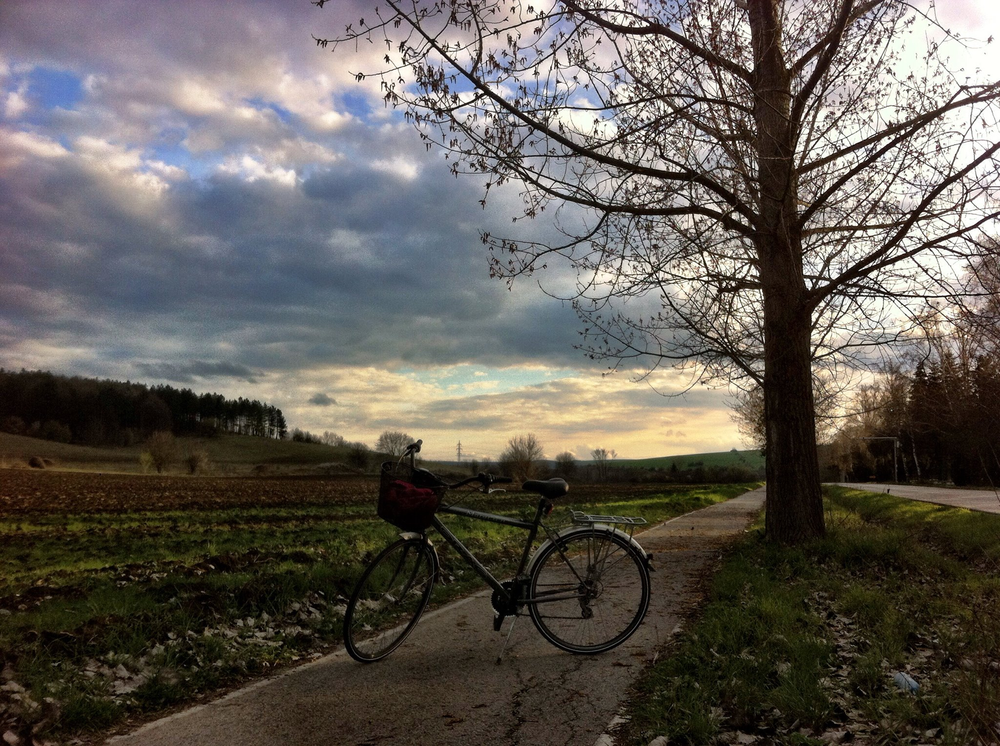

Лесопарк Пчелина е активна зона за отдих на гражданите на територията на Разградски регион. Разположен на около 10 километра, югозападно от Разград, сред смесена борова и брезова гора.
Местността представлява долина, с дължина 4км, разположена в посока юг-север върху полупланински терен и два язовира. Старото име на лесопарк Пчелина е Кувънлък, а днешното му наименование произлиза от това, че е място за отглеждане на пчели. Хората наричат местността още Варнело, защото пътят през гората е между Русе и Варна. Двата язовира, разположени един след друг на Пчелинската река, са истинско богатство, защото дават възможност за развитие на различни видове воден спорт и риболов.
